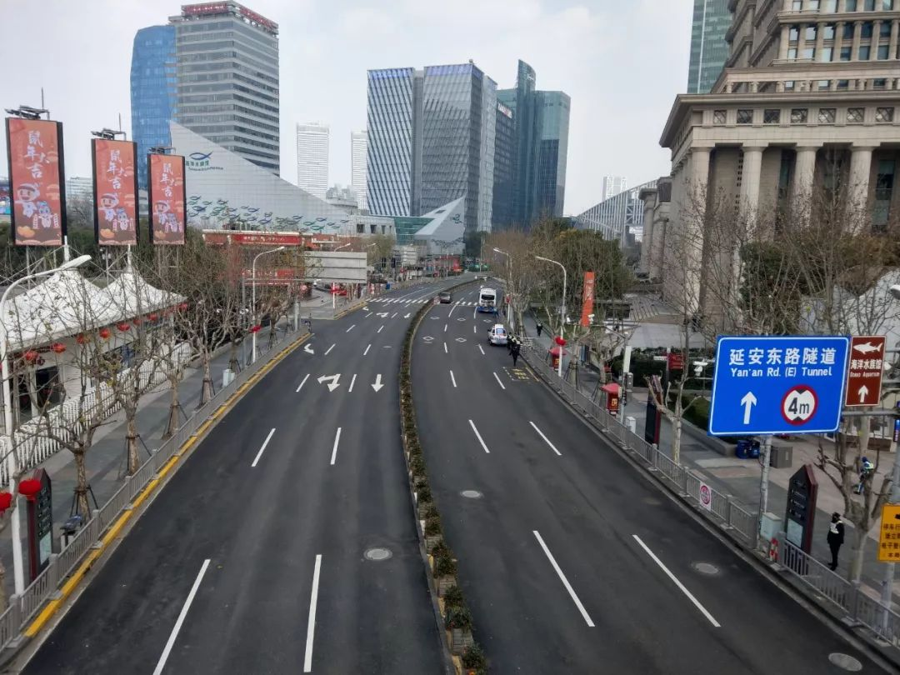
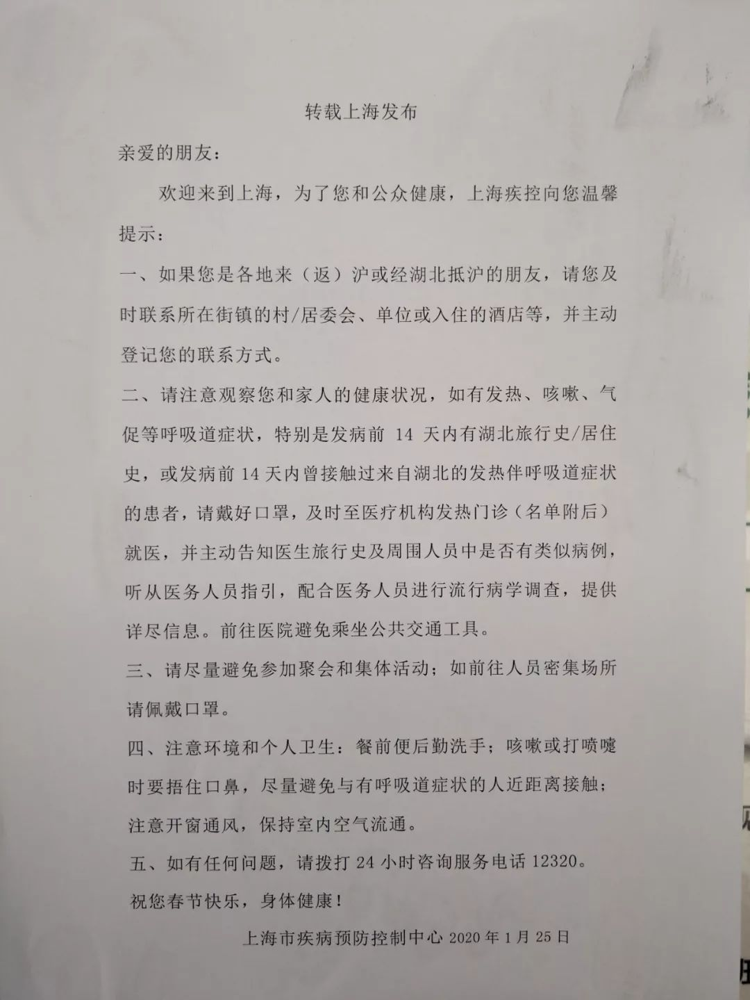

当载满武汉人的航班降落，浙江省人性化应对的底气从何而来？
原文链接 备份链接 全国第一个公开通报疑似病例的省份；全国最早启动一级响应的省份。 虽是“人口小省”，但因与湖北经贸往来密切，目前确诊人数名列全国第二，确诊比例远超广东河南。 在发现5例疑似病例的时候，省政府高层即以“硬仗大仗”严阵 …


2003年上海仅有8人感染SARS，而本次疫情短短10天已有101人确诊。17年前的经验，这回还有没有用？
上海的疫情防控有三张网：道口和口岸；发热门诊跟预检分诊；社区。
医生、警察、居民三人小组对所有湖北返沪人员进行排查，警察进行看管和告知，医生掌握身体状况，居民提供生活保障。
隔离区讲规则，也有温情，家长在隔离，6岁儿童看病，都由值班医护接送。
SARS之后，上海建立专门用于收治突发疫情患者的上海公卫中心，本次作为定点医院显得游刃有余。

2003年的SARS持续7个月，当时常住人口1700万的上海仅有8人感染。而这次的新型冠状病毒肺炎，上海1月20日公布首例输入型确诊病例以来，短短10天，已确诊101例。
上海常住人口已经飙升至2500万，17年前的经验，这回还有没有用？
从全国范围来看，也是在这10天时间里，新型冠状病毒肺炎的确诊数也已超过SARS，当时中国内地共5327人感染，死亡349人。而截至1月29日24时，中国内地累计报告新型冠状病毒肺炎确诊病例7711例，死亡170例。
在上海目前的101例病例（截至29日24时）中，48例都是来自湖北武汉及其省内各地。通过人传人，又在上海出现了近一半的本地病例。
截至目前，虽与浙江、广东的确诊数相比，上海还不算靠前，但也已是SARS时期确诊人数的12倍多。其中的原因，一则是人口流动的速度和数量已远远超过2003年，二则是武汉封城之前又有很多人仓促投奔上海而来。
就在首例确诊之后，上海就宣布成立全市层面针对此次输入性疫情的防控工作领导小组，此后迅速形成卫健、公安、农业农村、交通运输、市场监管、民航、铁路、区域信息等部门的联防联控，触达之迅疾，波及之广泛，超过了17年前的SARS之时。
不为人所知的，更有无数基层防控人员一遍遍的“地毯式”排查行动。上海之“精细化”城市管理风格被体现得淋漓尽致。

△ 原本车水马龙的陆家嘴此刻空荡荡的，刘冉摄
“地毯式”排查：最原始最有效的办法
给顾青（化名）打电话的时候，是午休时间，只听他吸溜了一口泡面，说等会儿。
他是上海某区街道办的负责人，大年三十吃完年夜饭，收到排查命令之后，就一直没回过家。几乎每天都是早上七点开始工作，晚上就睡办公室。
一等就到了晚上才说上话，顾青说，排查工作，说难也不难，“就是掌握哪些人去过湖北，或和湖北人有密切接触。”第一轮排查对象是区公安局给的几百人名单。“虽然是湖北籍，但没离开过上海，这种就排除。”
一旦确认有旅行史或接触史，疾控中心的工作人员会上门测体温，做好详细登记。有住处的，居家观察；没有住处的，劝说他们集中到一个地方进行观察（每个区都有医学观察点）。“告诉他们，14天不要出门，如果没有症状是属于安全的，如果有症状马上和居委会联系。一天两次，报告他们的体温。”
1月26日晚，武汉市长周先旺在新闻发布会上表示，因为春节和疫情的影响，目前有500多万人离开武汉。
其中，至少有超过8万人来沪。这里面就包含，封城之前，开着私家车来沪人员。顾青说，这批人的信息，在第一轮排查中掌握不到。
第二轮“地毯式”排查，就是挨家挨户走访。“这一轮排查任务比较重，从大年初二早晨8:30开始，到晚上七八点，将近12个小时，把辖区内将近2万户排查出来。”
偶尔也有吃闭门羹的时候。“比如说，你敲开门，但人家马上说你离我远一点。有的湖北过来的，不太愿意被查，可能门都不给你开。碰到这种情况，卫生服务中心、派出所同志，会一起做工作，得再去一趟，再去劝服。”
也会有居民主动打电话到居委会，或者通过12345电话来反映，附近有从武汉那边回来的人员。顾青再发动人去找。

△ 公交车站宣传栏贴的告示，刘冉摄
排查完2万户之后，顾青的工作并没有轻松起来。初六开始，会有大量的返沪人员，对于基层防控人员来说，将会是新一轮的挑战。顾青认为，后面的任务会更重，之前两轮排查，对这个小区有多少人，相对清楚。“后面回来的基本上都是外来务工人员，这些人的情况其实我们是不掌握的，那么要一家一家核实。”
因此，初三开始，顾青又开始第三轮的排查，主要针对单位、商务楼、工地、饭店等。
顾青只是众多基层防控人员中的一个写照，就像螺丝钉，看上去细枝末节，却是整个防控工作中最为关键的一环。1月28日，国家卫健委高级别专家组组长钟南山接受新华社采访时说，“应对疫情要抓住两个要害，一个是早发现，一个就是早隔离。这两条是最原始，也是最有效的办法。”
三道防控网，精细化管理
一位上海官员已经连轴转了11天10夜，他对八点健闻说，SARS给上海提供了很多实战的预案，令这次应对新冠肺炎更从容。
上海的疫情防控，有三张网。第一张是道口和口岸。配备了警察、医生、辅警6人小组，对可能有输入风险的人群进行体温检测。体温正常的，引导到集中的隔离观察点，进行医学观察；体温异常的，就近送往发热门诊。
第二张，是发热门诊跟预检分诊，第一时刻把发热病人跟正常病人进行区分，减少传播路径。
第三张，就是社区。以闵行区为例，实行了医警居三人小组，一个医生，一个警察，一个居民，对所有湖北地区来的人进行排查。全区成立了578个这样的小组，已经发现了2000多个湖北籍的返沪人员。
三人小组是闵行区特有的一个预案。警察要对重点观察人员进行看管和告知，让他承诺14天不出门；但他的身体状况、体温情况掌握，由医生来做；对他生活的保障，及其他一些比较杂的事务处理，由社区来做。
此外，每个街镇都预备了1～2个集中的医学观察点。来监测，在道口、口岸、宾馆，发现的有发热、可疑接触史人群。闵行区预备了14个医学观察点，准备了将近800张床位。
而这些工作总结起来，可以概述为三步，第一、找人或者找源；第二、隔离；第三、治疗。一位上海社区工作人员表示，“我们把这三步坐实了，把人先找到，人找不到，就是个潜在的传染源。找到人以后，隔离一定做到位。期间有异常的状况，积极救治。上海主要抓住了三个核心。”
严防死守之下，闵行区的确诊病例目前是2名。但在一位负责人看来，病例多少，并不代表防控效果。闵行区有254万人口，是一个大区，户籍人口小于外来人口的一个区，新上海人多，因此防控难度是很大。
在他看来，防控的关键，是返工、返城、返学这三返人员到了之后，能有效控制。因此，上海市仍旧处于紧张的防控状态。
针对三返人群，上海也做了预案。1 月 27日，上海市人民政府发布关于延迟上海市企业复工和学校开学紧急通知，各类企业不早于2月9日24时前复工。涉及保障城市运行必需（供水、供气、供电、通讯等行业）、疫情防控必需（医疗器械、药品、防护品生产和销售等行业）、群众生活必需（超市卖场、食品生产和供应等行业）及其它涉及重要国计民生的相关企业除外。
“已经返沪的人群，我们采集到他的健康信息之后，交由各个单位、各个企业、各个社区，按照市里面统一要求，定期了解其健康状况，不一定要完全隔离。但湖北籍及途经湖北的，我们对他要14 天的医学观察。”

△ 隔离观察点工作区，刘冉摄
隔离区的规则与温情
家长在隔离，6岁儿童看病谁接送？
1月29日，大年初五，迎接财神爷的日子，也是一些基层医护人员春节调休的时间。但从大年初二开始，上海某社区卫生服务中心的200多名医护陆续返回，目前基本全员到岗。如上海其他200多个社区卫生服务中心一样，防控疫情的紧张情绪一直在蔓延。
隔离观察点与社区卫生服务中心仅一街之隔，原来是镇里的一家酒店。共有60个房间，目前隔离了67人，已经满员。镇里已经在考虑安排下一个隔离点，以防如果再有新的人员需要送来隔离。
“这个隔离观察点里，绝大部分都是从道口拦截下来的湖北来沪人员。”一位隔离观察点的工作人员说，湖北来沪人员，一开始在上海有固定住所的，实行居家隔离；没有固定住所的，采取集中隔离；后来防控升级，无论在上海有无住所，一律送到隔离观察点。
隔离人员要完全杜绝与外界接触，禁止串门，隔离点的一位医生介绍，“无聊就只有待在房间里看看电视”。隔离人员的饮食，会由镇政府安排，先送到酒店，再由专人送到各楼层的清洁区，隔离人员自己出来取。吃完后留下的垃圾，仍然由值班人员前去收取。医务人员进入楼层，必须全副武装，穿上全封闭的二级防护服。
观察时间是两周，在这段时间内，每个房间的床上用品都不更换，但房间内每天会进行清洁，消毒。隔离人员有各种需求，可以打电话到前台，也可以找每个楼层的值班人员。
这家酒店里的隔离人员，尚未出现疑似感染的病例。只有一个6岁儿童，有腹泻症状，已经由卫生服务中心派车，送到就近医院进行诊治。经诊断，这名儿童是肠道感染。由于家长在隔离中，孩子在医院没有监护人照管，应对公共危机，需要人们的合作与关爱，“我们只好自己辛苦一点，每隔两个小时都会打电话到医院，询问孩子的情况，好了再派车去接。”隔离点一位值班医生说。
△ 医护人员穿上防护服准备去接隔离者的孩子，刘冉摄
隔离点是24小时值班。白天包括后勤，会有20多人在场。原则上是安排一名医生，两个公卫人员，一个护士，加上后勤，转运人员，驾驶员，还有行政领导也亲自督阵。夜间值班，也有七八个人。在道口排查，每个班次6人，每天三班，要安排18个人。其中夜班是晚上12点到早上8点。
排班的时候，所有医生护士都非常踊跃。微信群里都是“我报名”，“我报名”…… “有很多同志从初一到现在都没睡几个小时。”
接受采访的医生，有几位都参加过当年的SARS防控，她们表示，和SARS时期相比，现在的防控更加规范，医疗规范流程第一时间下发，医务人员感染的几率就会很低。到目前为止，服务中心还没有医护人员出现感染，或疑似感染。
防控网的后面，上海“小汤山”游刃有余
上海首例新冠肺炎是1月20日晚在国家CDC确认后对外公布，这是一位56岁的女性患者，确诊后收治于上海市公共卫生临床中心（下称上海公卫中心）。1月24日，她治愈出院。
首例患者的处置在输入性疫情中尤为关键，和她有密切接触的人士立刻进行了医学观察，这都得益于上海在2003年SARS疫情中积累下来的经验，十余年中又不断改良。
层层防控网之下，作为集中收治此次肺炎患者的上海公卫中心，面对这场影响力大于SARS的疫情，显得游刃有余。
上海公卫中心是SARS疫情后，在偏居一隅的金山区，建成的专门用于收治突发疫情患者等的三级甲等医院，作用类似于北京“小汤山”。
上海公卫中心主任朱同玉告诉八点健闻，一个城市必须预先考虑建设应对疫情的专门医疗机构。“但往往是财神跟着瘟神走，瘟神一走，财政投入就忘掉了。对于保证底线的东西，大家往往会忽略掉。”
他依然记得，经历了SARS后，上海决意投入财政资金建公卫中心，而且是被列为当时的政府1号工程，由副市长杨晓渡督建，“天天睡在工地上”，用了半年时间扩建至10万平米，于2004年11月开业。目前全职医护、研究、管理人员等有1200多人。
按上海的部署，此次疫情的疑似病例在全市各家医疗机构中收治，一旦确诊，就立即送至上海公卫中心。
这家中心有整整四座大楼都拥有“负压病房”，即指病房内的气压低于病房外的气压的病房，也是WHO在规定抢救非典等传染病病人时特别强调的一个重要条件。而该中心拥有300余个负压病床、300余个普通病床，国内拥有此基础的城市屈指可数，甚至国外都很少见。
“疫情面前应该先走一步，”朱同玉说，“临时建的和一年建的相比，结构质量、安全度等都无法相提并论，何况还需要设备、人员进行磨合。”他更是提议可以在全国不同的区域考虑建国家应急医学中心。
在重大疫情未发生的十余年里，这家机构的工作中心就放在传染病等临床研究上，在发现病毒等临床研究领域跻身于国际一流的水平。它是此次最早发布新型冠状病毒全基因序列的机构之一，同时，也是最早发现治疗艾滋病药物对新冠肺炎早期患者有效的机构之一。
朱同玉觉得，此次疫情“比预想的要复杂”，决不能掉以轻心。
如果上海的确诊人数增至150人，上海公卫中心就要启动临时病房的开建。“50亩草皮准备好了，图纸也已设计好，预留了地面600张床，需要建的时候随时可以。不能等到300个床位住满，才开始考虑。”他说。
截至1月29日12时，上海新增16例确诊病例，总数上升至96例，离上海公卫中心“负压病房”床位的上限还绰绰有余。
但即便有宽裕的医疗能力与硬件储备，朱同玉依然觉得，面对重大疫情最有力的武器并非多顶尖的医疗能力，而是“阻断传播源，隔离”，这才是核心。
谭卓曌 季敏华 刘冉 吴晔婷|撰稿
王吉陆|责编

我们尊重原创版权，未经允许请勿转载。
授权转载
郑琪 微信号: 1281949389
商务合作
上海：leslee 13916263824
北京：Jessie 13911125922
线索爆料、意见反馈，加入核心读者社群
请扫码联系健闻君

让朋友们看到你也在看
↓↓↓
文章已于修改
原文链接 备份链接 全国第一个公开通报疑似病例的省份；全国最早启动一级响应的省份。 虽是“人口小省”，但因与湖北经贸往来密切，目前确诊人数名列全国第二，确诊比例远超广东河南。 在发现5例疑似病例的时候，省政府高层即以“硬仗大仗”严阵 …
原文链接 备份链接 2003年SARS疫情，常住人口最多（1700万）的上海市，仅有8人感染。且都为散发状态，未出现大规模聚集性爆发。 上海市在疫情未到来时，就做了充分的准备。下沉到基层社区、落实到个人的防控措施，对于疫情控制起到重要 …
原文链接 备份链接 今天（2月4日）天气依然很好。武汉市民生活还是很平稳。闷是有一点，但只要活着，闷是能忍住的。 下午突然听到有人再度恐慌，去超市抢购，说是担心超市关门，断了吃喝。我想这个大概不会吧？市府似乎就此发了一个声明，即保证超市不 …
原文链接 备份链接 《战疫口述记》，是燃财经在新型冠状病毒肺炎期间推出的特别栏目，记录疫情亲历者的观察和感受。本文为第3篇，查看前2篇请点击《农村这样防肺炎》《我在武汉战肺炎》。 作者 | 苏琦 金玙璠 孟亚娜 唐亚华 孔明明 魏佳 …
原文链接 备份链接 1月29日下午，北京市委办、市政府办联合发文，提出本市出现多起聚集性病例（一家人里有几人发病）、没有湖北接触史的本地病例、以及发现隐性感染者和低龄感染者，波及范围可能越来越广。这些迹象都意味着“北京疫情出现由输入期转入 …